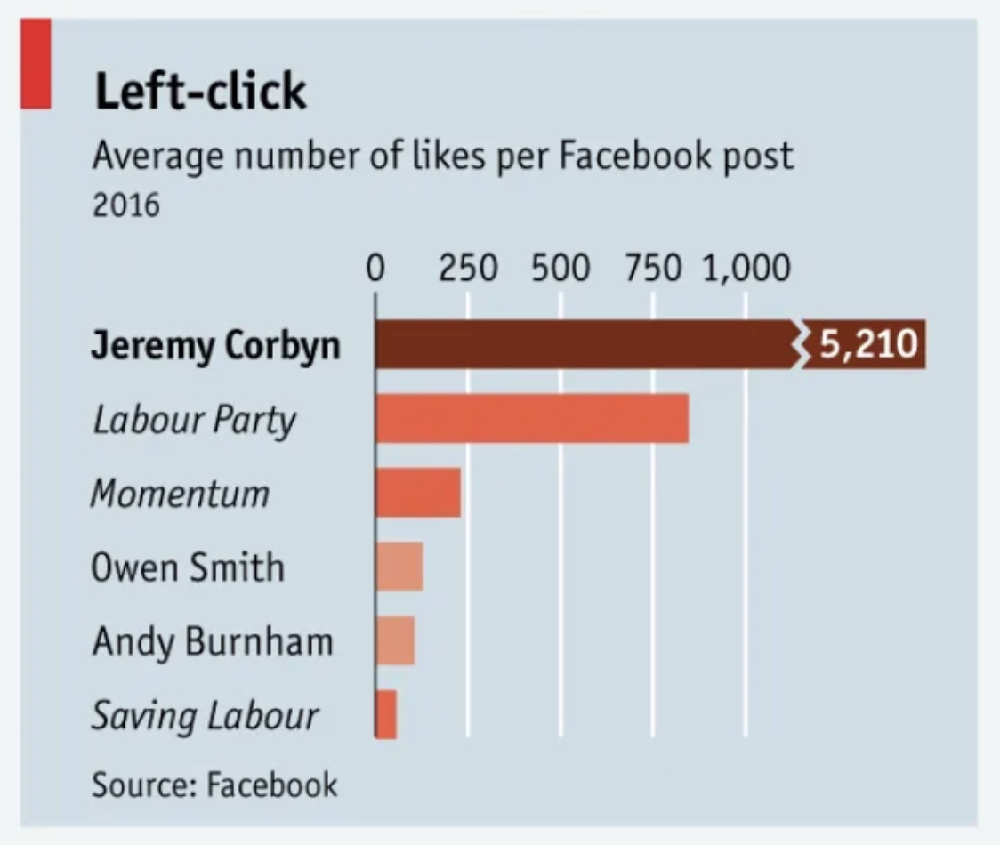

Source: Economics Observatory
UK Inflation and Economic Growth: Evidence from Three Decades
The Bank of England should maintain its 2% inflation target to avoid the economic contractions that historically accompany high inflation episodes.
Data confirms inflation spikes in 1990-91, 2008-09, and 2020-22 coincided with sharp GDP contractions—whether before, during, or after—validating low inflation targets.
Data Sourve: Inflation YoY (%) |
GDP YoY (%) (Office for National Statistics)
Code: Graph 1 |
Graph 2
Version 1: Original Chart
Version 2: Replicated Chart
Version 3: Improved Chart
This improved version starts the axis at zero with consistent scaling, making the dramatic difference visible: Jeremy Corbyn's engagement was more than 7 times higher than the Labour Party's. A single color scheme replaces the original's unexplained multiple colors, which added confusion rather than clarity.
API Functional Description: The World Bank API uses a base URL of "http://api.worldbank.org/v2/", followed by country/region codes, indicator code, and query parameters. For this chart, I used seven regional codes (EAS, ECS, LCN, MEA, NAC, SAS, SSF) representing major world regions, combined with indicator code SP.DYN.IMRT.IN for infant mortality rate per 1,000 live births.
Three query parameters customize the data: (1) format=json returns JSON format, (2) per_page=500 retrieves sufficient records, and (3) date=1990:2050 specifies the year range while ensuring future updates are captured automatically.
The complete URL used:
http://api.worldbank.org/v2/country/EAS;ECS;LCN;MEA;NAC;SAS;SSF/indicator/SP.DYN.IMRT.IN?format=json&per_page=500&date=1990:2050
(This live API connection automatically updates when the World Bank publishes new data)
Code: CC5 API Task
For this chart, I scraped Premier League table from Wikipedia, cleaned data in Colab, exported to CSV on GitHub, visualized attack-defense balance using Vega-Lite diverging bars.
View Google Colab Notebook
Code: CC5 Scraper Task
Daily chocolate prices are simplified by grouping observations by week and supermarket. For each week, I compute the 25th and 75th percentiles across stores and plot the interquartile range, capturing how price dispersion evolves over time.
This analysis explores the price dispersion of chocolate products across different retailers in the UK. By visualizing the price ranges and averages, we can identify pricing strategies and market positioning.
Daily whisky prices are reduced to store-level median prices using observations from the last 60 days. I then plot each supermarket’s deviation from the overall median price, highlighting cross-store differences in pricing strategies.